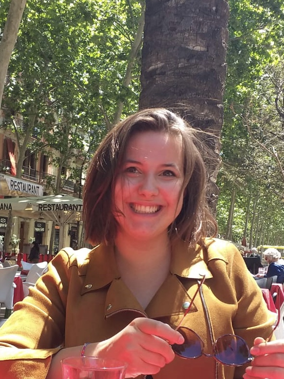

Hi there, I'm Lisi, a Theoretical Systems Biologist and Maschinenlehrerin. I form part of the Theoretical Systems Biology Group led by Michael P.H. Stumpf.
Our group is located at Imperial College London and at the University of Melbourne.
I started in the group as a MSc Student at Imperial College London; After my graduation, I became a PhD Student at University of Melbourne.
Prior to joining Michael's group,
I was lucky enough to gain my first research insigns whist being a BSc student in Bioinformatics at the Technical University Munich and the Ludwig-Maximilians-University Munich (2014-2017).
During this time I got to visit the Quantitative Single Cell Dynamics Group led by Carsten Marr at the Helmholtz Centre Munich,
and in the Computational Systems Biochemistry Group of Juergen Cox at the Max Planck Institute of Biochemistry in Munich.
Find me on Twitter, LinkedIn and GitHub; Or reach me via
email.